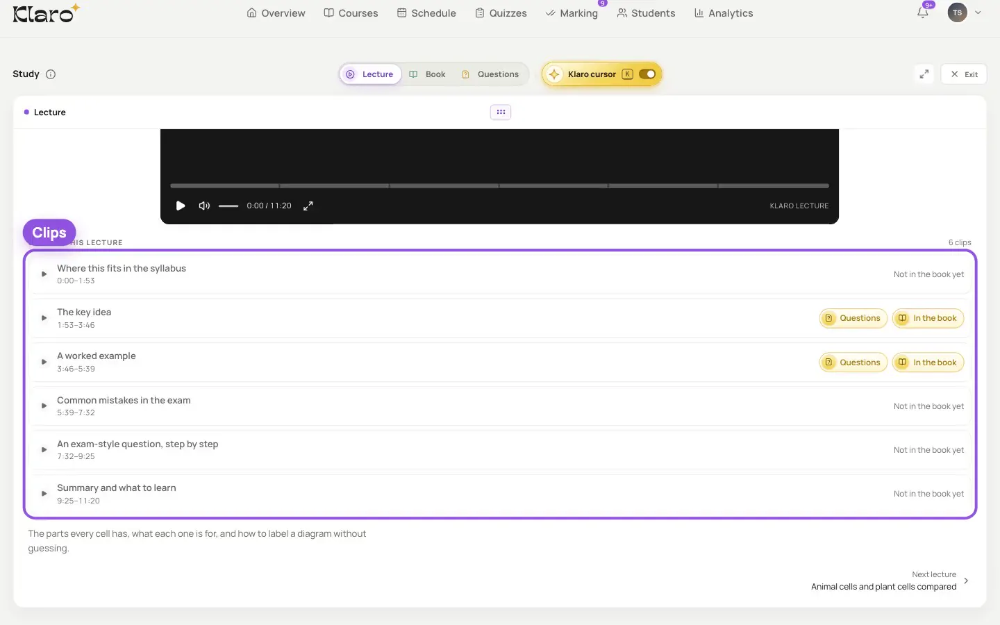

Start it on Zoom from here
Klaro sets up the meeting when you schedule the class, so there are no links to send. Your students get a reminder 30 minutes before, and joining marks them present.
About quizzes and homework
Pick the course, the time and how long it runs, and Klaro sets up the Zoom meeting. Afterwards, the recording lands in your course, cut into clips linked to your book.
Your class sits on your teaching calendar, next to your quizzes and homework, and you start it on Zoom from there. Afterwards, the recording is cut into clips, each one linked to the part of your book you explained.
What your students see
No links to send, and every recorded class becomes part of what your students study.
Klaro sets up the meeting when you schedule the class, so there are no links to send. Your students get a reminder 30 minutes before, and joining marks them present.
About quizzes and homeworkAfter the class, it's cut into clips by topic. A clip that explains part of your book opens it at that page, next to the questions on it.
About the course builder
The class shows on their home page with a Join button, and only students in the course get it. You keep the last word on the register.
What your students see


Your lectures, your book and real past papers, linked to each other. Nothing in your course is made up.
Students learn from your recordings, in the order you set.
Every question comes from a real exam paper, and says which.
The Klaro team checks every course before your students see it.
Change any mark before a result reaches a student.
No. Klaro sets up the Zoom meeting when you schedule the class. Your students join from Klaro, and only students in that course get the Join button.
It lands in your course, cut into clips. Each clip that explains part of your book is linked to that page, so your students can watch the moment and read the page together.
Joining from Klaro marks a student present. You have the last word on the register: here, not here or excused.